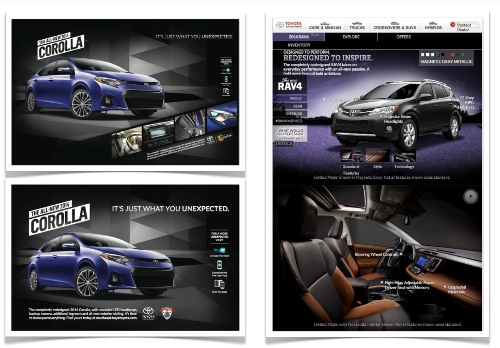
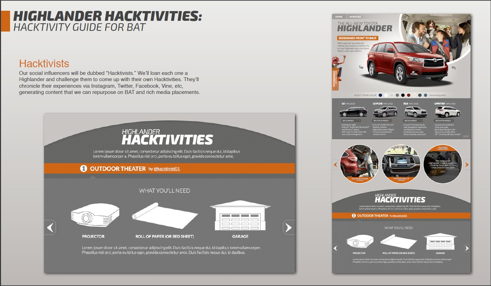
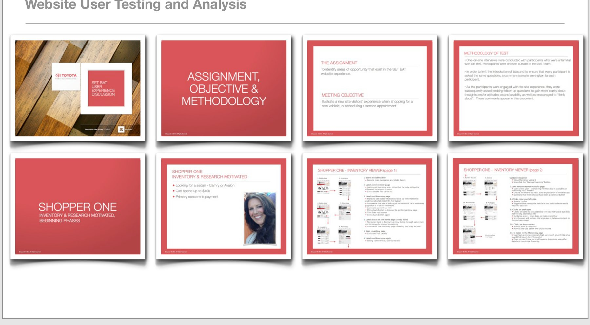

Southeast Toyota
All digital work for Southeast Toyota: a Corolla print campaign that came alive through a phone, Highlander social content, and a faster, user-tested dealer site.
Creative productionProgram deliveryProduct
ARprint, through the LAYAR app
1account: all digital work
2014Corolla launch
1user-testing study of the dealer site
The problem
- Southeast Toyota was launching the redesigned 2014 Corolla.
- The agency wanted print that did more than sit there.
- The dealer site, southeast.buyatoyota.com, had to get faster and easier to use.
What I did
- Oversaw all digital work for the account and guided the production team.
- Produced the LAYAR augmented-reality print campaign and its landing pages.
- Produced the Highlander Hacktivities guide for the dealer site.
- Planned, ran and presented a user-testing study of the dealer site with a colleague.
- Improved performance on southeast.buyatoyota.com.
- Sat on the proposal-development team.
What changed
- An AR campaign delivered on an agency timeline.
- Measurable performance gains on the dealer site.
- Testing findings the client could act on.


